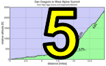

|
 |
 |
| pl | # | name | team | cat | time | mph | fph | age- adjusted score |
|---|---|---|---|---|---|---|---|---|
| 1 | 129 | Lisa Penzel | The Brown Zone | 45+ | 55:36 | 14.31 | 2220 | 140.10 |
| 2 | 146 | Lynn Sestak | The Brown Zone | 50+ | 58:48 | 13.53 | 2099 | 139.59 |
| 3 | 215 | Laura Hipp | Western Wheelers | 4 | 62:53 | 12.65 | 1963 | 123.26 |
| 4 | 79 | Lisa Emmerich | Sr's & Mr's of No Mercy | 50+ | 65:28 | 12.15 | 1885 | 121.51 |
| 5 | 305 | Amy Cameron | Sr's & Mr's of No Mercy | 30+ | 59:08 | 13.45 | 2087 | 118.48 |
| 6 | 422 | Sandra King | Team Fremont FFBC p/b Chipotle | 40+ | 68:08 | 11.68 | 1811 | 107.48 |
| 7 | 312 | Andrea Ivan | Silicon Valley Triathlon | 82:41 | 9.62 | 1493 | 97.88 | |
| 8 | 42 | Judy Colwell & Rufus | Team Colwell | 70+ | 97:59 | 8.12 | 1260 | 92.86 |
| 9 | 440 | Darlene Stevenson | 40+ | 80:58 | 9.83 | 1524 | 86.35 | |
| 10 | 423 | Nina Komlik | 45+ | 102:24 | 7.77 | 1205 | 69.91 |
| pl | # | name | team | cat | time | mph | fph | age- adjusted score |
|---|---|---|---|---|---|---|---|---|
| 1 | 230 | Carl Nielson | Sr's & Mr's of No Mercy | 50+ | 48:32 | 16.39 | 2543 | 135.99 |
| 2 | 212 | Clark Foy | Western Wheelers | 45+ | 48:26 | 16.43 | 2548 | 131.55 |
| 3 | 69 | Adrien Costa | Slipstream-Craddock Jr. Development | Junior | 47:31 | 16.74 | 2597 | 128.97 |
| 4 | 438 | Kieran Sherlock | Western Wheelers | 45+ | 48:24 | 16.44 | 2550 | 128.83 |
| 5 | 56 | Tim Clark | Low-Key | 45+ | 48:30 | 16.40 | 2545 | 128.20 |
| 6 | 120 | Rob Manchester | 35+ | 46:20 | 17.17 | 2664 | 126.56 | |
| 7 | 131 | Josh Pizzica | Gene-Solve/Etxea | 35+ | 48:20 | 16.46 | 2554 | 121.88 |
| 8 | 125 | Alan Nevin | IronData Thirsty Bear | 40+ | 49:58 | 15.92 | 2470 | 120.78 |
| 9 | 213 | Chris Furgiuele | Dolce Vita Cycling | 35+ | 49:49 | 15.97 | 2477 | 118.85 |
| 10 | 110 | Franz Kelsch | Pan y Agua | 65 Almost | 59:41 | 13.33 | 2068 | 118.76 |
| 11 | 431 | Edward Miller | SLACer | 70+ | 64:38 | 12.31 | 1910 | 118.37 |
| 12 | 78 | Bill Dvorak | 55+ | 56:20 | 14.12 | 2191 | 118.03 | |
| 13 | 239 | Dennis Van Hoof | Type 1 Diabetes | 35+ | 50:17 | 15.82 | 2454 | 115.20 |
| 14 | 99 | Peter Ingram | Ind. | 55+ | 58:05 | 13.70 | 2125 | 114.28 |
| 15 | 421 | Mark King | IC3 Hammer Nutrition | 45+ | 53:45 | 14.80 | 2296 | 113.98 |
| 16 | 443 | H Two Brown | The Brown Zone | 50- | 52:39 | 15.11 | 2344 | 113.37 |
| 17 | 434 | Stefano Profumo | Bike Trip/Symantec | 30+ | 51:05 | 15.57 | 2416 | 112.93 |
| 18 | 70 | Andy Crews | Diablo | 40+ | 53:26 | 14.89 | 2310 | 112.01 |
| 19 | 317 | Thomas Rabedeau | SLACer | 55+ | 58:30 | 13.60 | 2110 | 111.19 |
| 20 | 37 | Dino Brown | The Brown Zone | Dual Suspension Beast | 56:19 | 14.13 | 2192 | 110.48 |
| 21 | 300 | MichaelsJ. Andalora | Bike Trip/Symantec | 60+ | 61:46 | 12.88 | 1998 | 108.98 |
| 22 | 143 | Wink Saville | 60+ | 64:09 | 12.40 | 1924 | 107.32 | |
| 23 | 130 | Jim Perreira | 45+ | 56:58 | 13.97 | 2167 | 106.53 | |
| 24 | 410 | Bryn Dole | Blekko | 40+ | 55:41 | 14.29 | 2216 | 106.17 |
| 25 | 76 | Pierre Doussiere | Mysef | 50+ | 59:38 | 13.34 | 2070 | 105.90 |
| 26 | 12 | Will von Kaenel | LGBRC | 50+ | 60:57 | 13.05 | 2025 | 105.49 |
| 27 | 417 | Brian Haines | Taleo Racing | 35+ | 54:20 | 14.64 | 2272 | 105.11 |
| 28 | 419 | Sunil Jagadish | San Jose Bike Club | 25+ | 55:26 | 14.35 | 2226 | 102.69 |
| 29 | 104 | Anthony Jawad | 25+ | 56:37 | 14.05 | 2180 | 100.23 | |
| 30 | 43 | Scott Byer | 45+ | 61:06 | 13.02 | 2020 | 98.33 | |
| 31 | 169 | Nic Brummell | Atlas | 50+ | 63:11 | 12.59 | 1953 | 98.22 |
| 32 | 45 | Pat Callahan | Quadzilla Racing | 40+ | 60:25 | 13.17 | 2043 | 97.32 |
| 33 | 26 | Bernard Bell | 50+ | 64:41 | 12.30 | 1908 | 96.82 | |
| 34 | 135 | Mihai R. | 30+ | 59:59 | 13.26 | 2058 | 93.68 | |
| 35 | 65 | Kevin Comerford | Sr's & Mr's of No Mercy | 30+ | 60:57 | 13.05 | 2025 | 91.95 |
| 36 | 401 | Nick Bellomo | Type 1 Diabetes | 30+ | 61:20 | 12.97 | 2012 | 91.29 |
| 37 | 84 | Stephen Fong | CyclePath Racing | 45+ | 65:17 | 12.19 | 1891 | 90.22 |
| 38 | 127 | Bart Niechwiej | 35+ | 63:45 | 12.48 | 1936 | 87.67 | |
| 39 | 31 | George Bonanto | Clydesdale | 64:00 | 12.43 | 1928 | 86.88 | |
| 40 | 437 | Eddie Santos | 25+ | 64:26 | 12.35 | 1915 | 86.20 | |
| 41 | 68 | Alex Cortez | Team Fremont FFBC p/b Chipotle | 40+ | 67:41 | 11.75 | 1823 | 84.96 |
| 42 | 58 | Kevin Colagiovanni | Team DUD | 25+ | 66:18 | 12.00 | 1862 | 83.38 |
| 43 | 441 | Han Wen | GOM | 40+ | 71:13 | 11.17 | 1733 | 78.91 |
| 44 | 442 | Matt Wittmann | 25+ | 80:08 | 9.93 | 1540 | 66.89 |
| pl | # | name | team | cat | time | mph | fph | age- adjusted score |
|---|---|---|---|---|---|---|---|---|
| 1 | 406 | Paul Chuck | Sr's & Mr's of No Mercy | 55+ | 52:47 | 15.07 | 2338 | 128.19 |
| 429 | Paul McKenzie | Sr's & Mr's of No Mercy | 55+ | |||||
| 2 | 64 | Tracy Colwell | Team Colwell | 40+ | 73:36 | 10.81 | 1677 | 78.32 |
| 61 | Hadley Colwell | Team Colwell | Junior |
| pl | # | name | team | cat | time | mph | fph | age- adjusted score |
|---|---|---|---|---|---|---|---|---|
| 1 | 1 | Daniel Connelly | Low-Key | 3 | 112:52 | 7.05 | 1094 | 48.50 |
| pl | team | age- adjusted score |
riders |
|---|---|---|---|
| 1 | The Brown Zone | 393.07 | H Two Brown, Lisa Penzel, Lynn Sestak, Dino Brown |
| 2 | Sr's & Mr's of No Mercy | 392.82 | Amy Cameron, Carl Nielson, Lisa Emmerich, Kevin Comerford, Paul McKenzie, Paul Chuck |
| 3 | Western Wheelers | 383.64 | Laura Hipp, Kieran Sherlock, Clark Foy |
| 4 | 305.87 | Bart Niechwiej, Mihai R., George Bonanto, Anthony Jawad, Wink Saville, Scott Byer | |
| 5 | SLACer | 229.57 | Edward Miller, Thomas Rabedeau |
| 6 | Bike Trip/Symantec | 221.91 | MichaelsJ. Andalora, Stefano Profumo |
| 7 | Type 1 Diabetes | 206.49 | Nick Bellomo, Dennis Van Hoof |
| 8 | Team Fremont FFBC p/b Chipotle | 192.43 | Alex Cortez, Sandra King |
| 9 | Low-Key | 176.69 | Daniel Connelly, Tim Clark |
| 10 | Team Colwell | 171.18 | Judy Colwell & Rufus, Tracy Colwell |
| 11 | Slipstream-Craddock Jr. Development | 128.97 | Adrien Costa |
| 12 | Gene-Solve/Etxea | 121.88 | Josh Pizzica |
| 13 | IronData Thirsty Bear | 120.78 | Alan Nevin |
| 14 | Dolce Vita Cycling | 118.85 | Chris Furgiuele |
| 15 | Pan y Agua | 118.76 | Franz Kelsch |
| 16 | Ind. | 114.28 | Peter Ingram |
| 17 | IC3 Hammer Nutrition | 113.98 | Mark King |
| 18 | Diablo | 112.01 | Andy Crews |
| 19 | Blekko | 106.17 | Bryn Dole |
| 20 | Mysef | 105.90 | Pierre Doussiere |
| 21 | LGBRC | 105.49 | Will von Kaenel |
| 22 | Taleo Racing | 105.11 | Brian Haines |
| 23 | San Jose Bike Club | 102.69 | Sunil Jagadish |
| 24 | Atlas | 98.22 | Nic Brummell |
| 25 | Silicon Valley Triathlon | 97.88 | Andrea Ivan |
| 26 | Quadzilla Racing | 97.32 | Pat Callahan |
| 27 | CyclePath Racing | 90.22 | Stephen Fong |
| 28 | Team DUD | 83.38 | Kevin Colagiovanni |
| 29 | GOM | 78.91 | Han Wen |